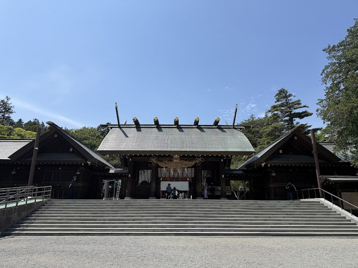
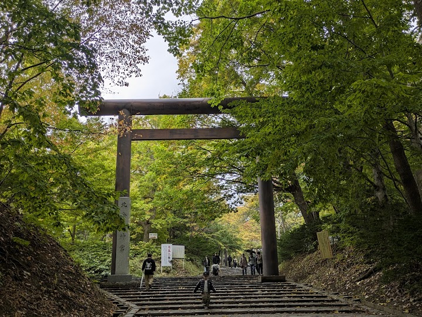
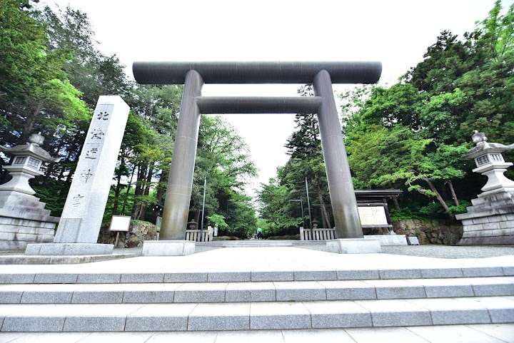
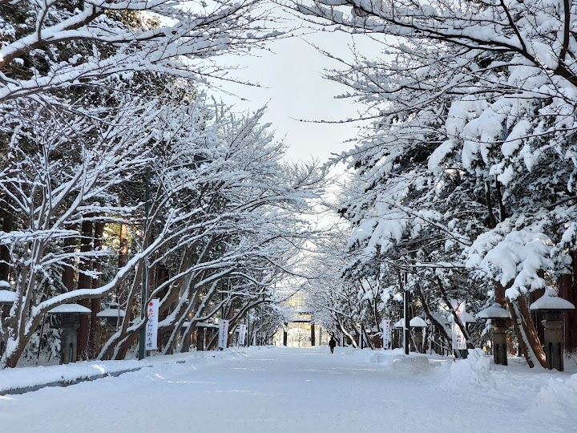
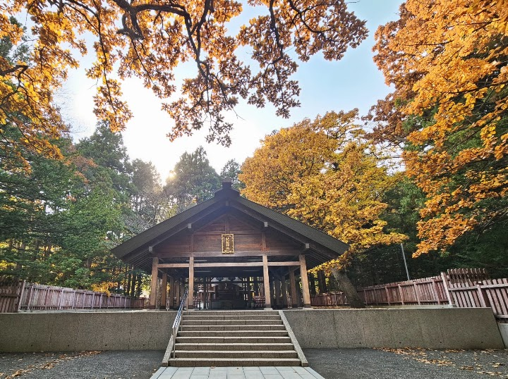

Hokkaido Jingu shrine and Maruyama Park (suggested)
Hokkaido Jingu is a Shinto shrine built in 1869 that honours four deities including the Emperor Meiji, in a wooded setting in Maruyama Park. It is a 10 to 15 minute walk from Maruyama Koen subway station and is especially peaceful in the snow.
Open in Google Maps (street view, more photos and reviews there)






Visitor tips on finding it and getting there
Hokkaido Jingu shrine was built in 1869 and is 10-15 minutes walk from Maruyama koen metro station. We went there in the morning, even though it's free, was not crowded that much. There are shops that sells lucky charms (omamori), souvenirs, prayers ..etc. There are fortune telling slips in different languages. It's large, spacious and well maintained shrine. It's calm, peaceful, and serene. We were lucky to see the ceremony going on inside the temple. If you want to visit a shrine that is less crowded and tranquil, this is the place for you. You can either spend 30 minutes or 2 hours, it's
Hokkaido Shrine is the principal Shinto shrine of Sapporo and one of the most popular places in Hokkaido for worship, blessings, and traditional cultural experiences. Located next to Maruyama Park, the shrine is surrounded by tall trees and nature, creating a peaceful and relaxing atmosphere despite its popularity. The approach to the shrine is especially pleasant, with wide pathways shaded by greenery. Whether you're visiting to pray, admire the traditional architecture, or simply enjoy a quiet walk, the shrine offers a serene escape from the city and is well worth a visit while in Sapporo. ⛩
We visited Hokkaido Jingu in the morning 🌞. It’s a must-visit for its calm vibe that feels like a soul hug 🤗—even in late July when the sun’s trying to turn us into popsicles 🍦, strolling through the park to the shrine stays refreshingly cool. April’s no slouch either, with that “spring breeze just gave me a high-five” feeling 👏! The grounds are spacious and well-tended, like a giant green living room 🛋️. Perfect for finding peace, grabbing an omamori (lucky charm—because who doesn’t need a little magic? ✨), and acing that “quiet morning walk” vibe. Highly recommend! 😊